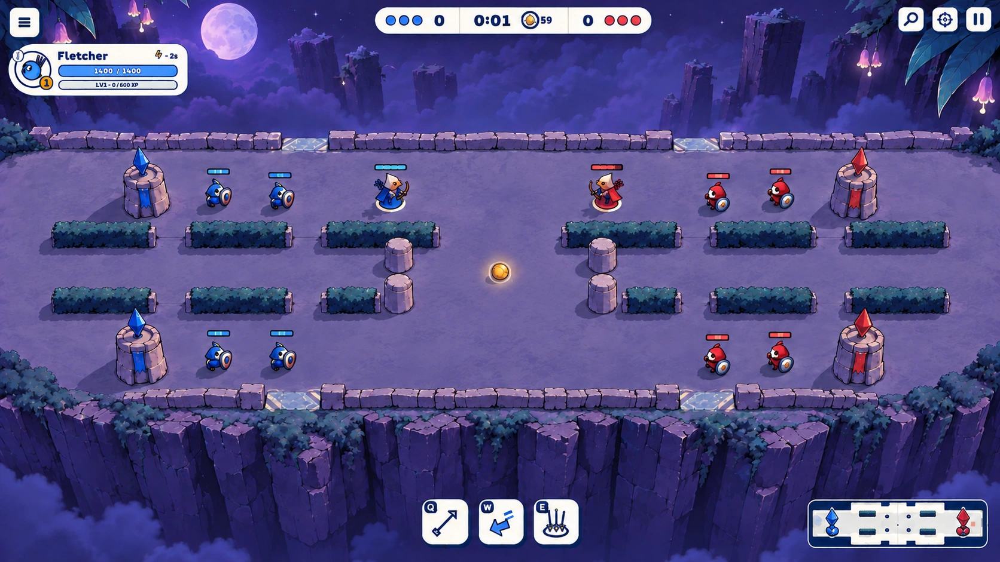
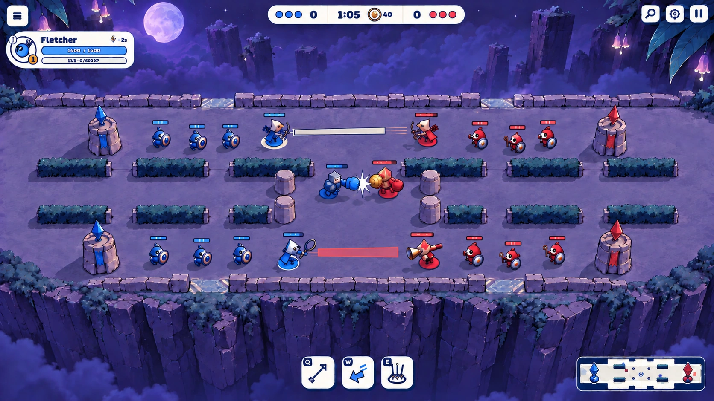
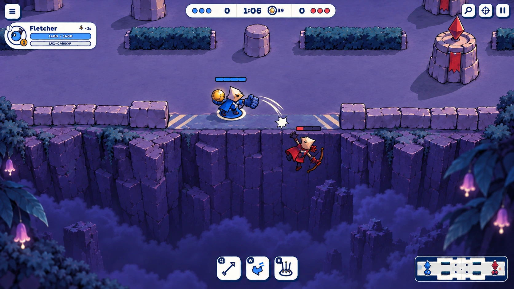

Flagfall night
To review · 2026-10-10
Is this Flagfall?
Overthrow’s sibling by moonlight: violet stone, a quiet night garden and a sheer drop into cloud. Two lanes flank the yard; breaks in the shore fence leave the Dunk edges open. Units and the gold Ball carry the colour.
01 · Establishing

02 · Crowded fight

03 · Dunk gap

Exact prompts and references · Approved Overthrow frames · Picked night style · Look direction · Flagfall layout